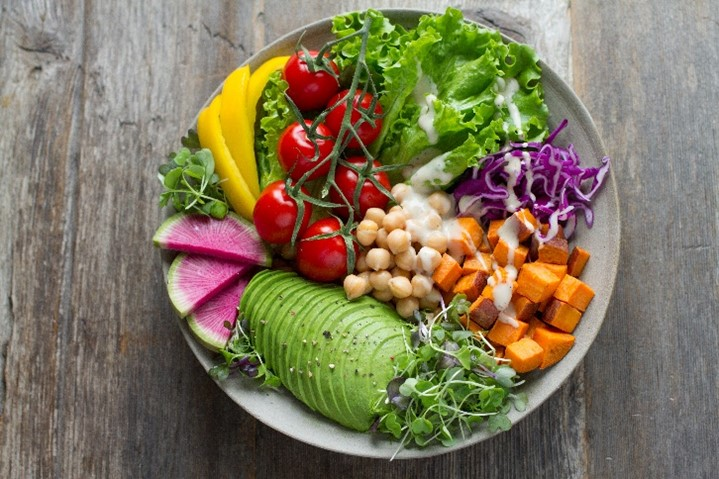
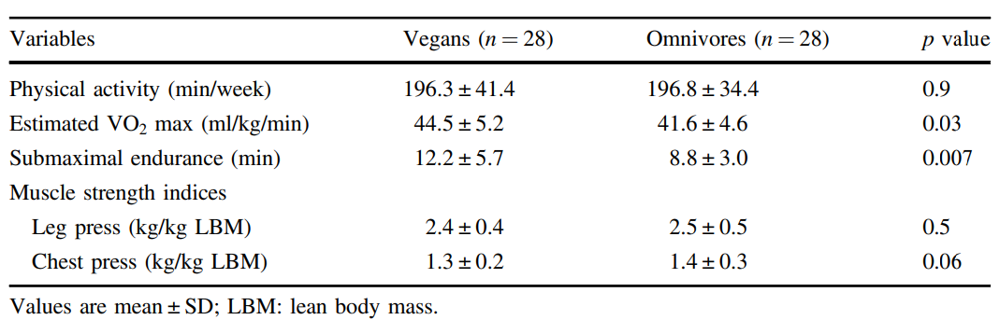

What kind of diets are you following? What is the relationship between vegan diets and exercise capacity in your opinion?
Nowadays, more and more people become vegans due to the various benefits vegan diets offer, such as responding to environment protection[1] and reducing the risk of heart disease and other diseases[2].
But in most people's view, the structure of vegan diets may lead to poor athletic performance because they lack certain nutrients, such as protein and vitamin D[3][4].
However, in 2020, this perception was broken by scholar Guy Hajj Boutros and his scientific team from the Université du Québec à Montréal. Their inspiring research showed that in the group of healthy young lean women, vegans’ muscle strength was as strong as omnivores, and their endurance was even better than omnivores[5].
So, based on this study, it seems vegan diets do not to necessarily weaken exercise capacity and may even enhance it in endurance.
There were 56 participants in the research, including vegans and omnivores. They were all healthy young women with similar habits of doing exercise, smoking, and drinking. They had all followed their respective diets for at least 2 years[5], which makes this research quite reliable.
Only women were included in this research because female vegans were significantly more in quantity and younger than male vegans. It meant that it was easier to recruit healthy vegans with good exercise capacity in the group of women instead of men.
All participants were then invited to take several tests on the following items: (1) estimated VO2 max (the maximum volume of oxygen that your body can inhale and use during exercise) and (2) submaximal endurance (how long you can keep up with intense physical exertion). They were used to reflect participants’ endurance capacity in exercise. And they were measured by a cycle ergometer, which looks like an exercise bike, but with participants’ heart rate, breathing, and blood pressure monitored. (3) Upper body muscle strength and (4) lower body muscle strength. They were measured by chest and leg press machines respectively[3] which are just those facilities that you can find in a gym.
According to the data derived (Table 1), with similar amount of physical activities every week, vegans won in the estimated VO2 max test significantly by 2.9ml/kg/min. They also had a huge advantage in the submaximal endurance, with 3.4 minutes more than the omnivores. But vegans and omnivores had very similar upper and lower body muscle strength, which both differ by 0.1kg (measured by chest and leg press)[5]. So, the result indicates that for healthy young lean women, a vegan diet is a blessing for the endurance and not a curse for the muscle strength. This result is contrary to people’s stereotype of vegans and is amazing.

You may wonder why vegan diets lead to better endurance. Here are some reasons.
Vegan diets basically promote people’s endurance in two ways. One way is to improve the efficiency of energy supply. The other is to weaken the factors that cause muscle fatigue and soreness.
Firstly, why do vegan diets improve the efficiency of energy supply in vegans’ muscles?
It is because energy is produced by the breakdown of sugar by oxygen, and vegan diets can promote sugar and oxygen supply in people’s muscle. As more materials lead to more products, more energy is produced as the result.
The reason why vegan diets enhance sugar supply is that cereals, legumes, and root vegetables, which are typical components of vegan diets, are rich in sugar and store more sugar in vegans’ muscles[6]. Though omnivores have a higher intake in other energy substances such as fats and proteins, their energy producing efficiency is lower than sugar, which could cause a decrease in the efficiency of energy supply in omnivores.
Vegan diets also raise the oxygen supply. Oxygen is transferred from lungs to muscles through our blood. As plants are low in some kinds of fats, vegan diets can lower people’s fat concentration in blood[7], and make their blood less sticky. When blood is less thick, blood flow will be faster, the oxygen transference will also be faster, and finally more oxygen is available in muscles.
So, with more energy supply in muscles when doing exercises, vegans’ endurance is improved.
Then how can vegan diets weaken the factors that cause muscle fatigue and soreness?
One factor is oxidative stress response, which is an overreaction of our bodies and accelerates muscle fatigue[8]. But fortunately, the factor is weakened by the quantity of vitamin C, vitamin E, and some other compositions in vegan diets. These compositions are the natural enemy of the chemical reactions happens in oxidative stress response. In this way, fatigue is delayed.
Another factor is inflammation[4] which causes many common types of our discomfort, such as muscle soreness during vigorous exercise, and the redness and swelling of our throats. However, surprisingly, vegan diets reduce it[9] by their lack of components that are inflammatory or sensitizing, such as resd meat[10]. So, vegans are less likely to suffer muscle soreness during vigorous exercise.
So, the delay of fatigue and the less possibility of suffering muscle soreness also lead vegans to better endurance.
Indeed, vegan diets can make some incredible changes in our bodies.
Though the result of this research is amazing, we should notice that there are some limitations. The research was conducted on healthy young women only. So, strictly, the conclusion only applies to this group[5]. More research should be done to include other groups of people in.
Another limitation is that participants’ regular exercise was measured only by a single question--“how much time do you spend on exercise per week?”[5]. The shortcoming of this question is that it ignored the intensity of exercise, which may vary among different participants. However, it is unlikely that many vegans do more intensive exercise than omnivores. So, generally, it will not affect the result a lot. But still, it is slightly detrimental to the rigor of this research.
This research inspires us that apart from the old and acknowledged positive effects that vegan diets have, they can also contribute to sports, especially the sports with emphasis on endurance. As the conclusion can only be applied to healthy young lean women, more research including other groups of people should be done in the future. But still, the results can convince clinicians not to discourage vegan diets and even to consider using a vegan diet for athletic training programs[5] to some extent, like marathon training.
So, let us be more confident in vegan diets. You are encouraged to try it with no worries that it will weaken your exercise capacity, especially for healthy young lean women.
[1]Pimentel D, Pimentel M. Sustainability of meat-based and plant-based diets and the environment. Am J Clin Nutr. 2003; 78: 660S–3S.
[2]Kim H, Caulfield LE, Garcia-Larsen V, Steffen LM, Coresh J, Rebholz CM. Plant-based diets are associated with a lower risk of incident cardiovascular disease, cardiovascular disease mortality, and all-cause mortality in a general population of middle-aged adults. J Am Heart Assoc. 2019; 8: e012865.
[3]Fields H, Ruddy B, Wallace MR, Shah A, Millstine D, Marks L. How to monitor and advise vegans to ensure adequate nutrient intake. J Am Osteopath Assoc. 2016 ;116: 96–9.
[4]Solis MY, Artioli GG, Otaduy MCG, Leite CDC, Arruda W, Veiga RR, et al. Effect of age, diet, and tissue type on PCr response to creatine supplementation. J Appl Physiol. 1985; 2017: 407–14.
[5]Boutros GH, Landry-Duval MA, Garzon M et al. Is a vegan diet detrimental to endurance and muscle strength?. Eur J Clin Nutr. 2020; 74: 1550–1555. https://doi.org/10.1038/s41430-020-0639-y
[6]Hearris MA, Hammond KM, Fell JM, Morton JP. Regulation of muscle glycogen metabolism during exercise: implications for endurance performance and training adaptations. Nutrients. 2018; 10: E298.
[7]Wang F, Zheng J, Yang B, Jiang J, Fu Y, Li D. Effects of vegetarian diets on blood lipids: A systematic review and meta-analysis of randomized controlled trials. J. Am. Heart. Assoc. 2015; 4: e002408.
[8]Powers SK, Talbert EE, Adhihetty PJ. Reactive oxygen and nitrogen species as intracellular signals in skeletal muscle. J. Physiol. 2011; 589: 2129–2138.
[9]Haghighatdoost F, Bellissimo N, Totosy de Zepetnek JO, Rouhani MH. Association of vegetarian diet with inflammatory biomarkers: A systematic review and meta-analysis of observational studies. Public Health Nutr. 2017; 20: 2713–2721.
[10]Barnard ND, Goldman DM, Loomis JF, Kahleova H, Levin SM, Neabore S, et al. Plant-based diets for cardiovascular safety and performance in endurance sports. Nutrients. 2019; 11: E130.